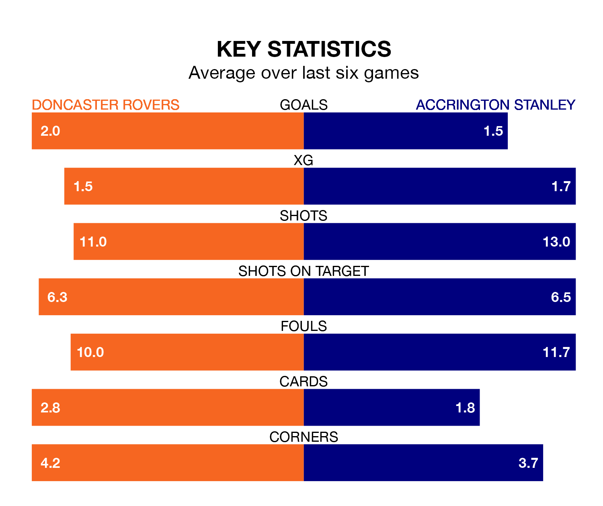

Doncaster Rovers host Accrington Stanley at the Eco-Power Stadium on Saturday on the back of seven consecutive wins in EFL League Two.
It means Doncaster have picked up the maximum 21 points from their last seven games, and they face an Accrington side who also won their last match, and have collected eight points from the last possible 21.
In the last 10 years, Doncaster and Accrington have played each other on 12 occasions. Doncaster won two of them, Accrington six, and they drew four times.
On average, the Rovers scored 1.1 goals and Accrington 1.3 in those matches.
Their last meeting was on December 9, when they played out a 0-0 draw.
With 56 goals in 42 games so far this season, Accrington are scoring at below the league average rate with 1.3 goals per game. But they are conceding fewer than average too, letting in 60 goals at a rate of 1.4 per game.
Doncaster are also below average scorers, with 1.4 goals per game, compared to a league average of 1.5. They have conceded 1.5 goals per game.
Stanley are 17th in the table after 42 games, of which they have won 15 and drawn nine, earning 54 points.
Rovers are seven places ahead of the away team in 10th, with 18 wins and seven draws putting them on 61 points.
Doncaster's last match was on Tuesday, a 2-1 win against Walsall, with Hakeem Adelakun and Joe Ironside getting the goals for the Rovers.
Accrington beat Newport County 3-1 last time out, also on Tuesday, with Alex Henderson, Joe Cameron Pritchard and Tommy Leigh on the scoresheet.
Saturday's match will be refereed by Ross Joyce, who has taken charge of 13 EFL League Two games so far this season, issuing five red cards and booking 64 players. He has awarded two penalties.
The last Accrington game Joyce refereed was the 3-0 loss at home against Mansfield Town on September 9. He is yet to oversee a match featuring Doncaster this season.
Updated: 10:01 (UTC), 12/04/24